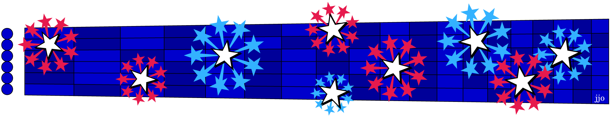

Before every major league baseball game we all sing our most patriotic contrafactum. Say what? Is that some Latin term for national anthem? Not exactly, but several national anthems are, in fact, contrafacta. Contrafactum is the musical term for a song that puts new lyrics on an existing melody.
In celebration of our country's 250th birthday, this month's sightreading handout* focuses on the musical origin of our national anthem as one among 85 American patriotic contrafacta all based on the very same melody, "To Anacreon in Heaven". It was the official song of the English gentlemen's club, "The Anacreontic Society", devoted to the hedonistic enjoyment of music (as in wine, women and song). Their high point was in 1791 when Joseph Haydn attended.
Where we now sing "O say does that star-spangled banner yet wave, O'er the land of the free and the home of the brave" the original had, in the words of the ancient Greek bard, Anacreron, "And, besides I'll instruct you, like me, to intwine, The Myrtle of Venus with Bacchus's Vine". That's the same Bacchus as in bacchanalia.
The original (as Exercise 1) was composed about the same time as our Declaration of Independence, while the one published with the words of Francis Scott Key came while we were again fighting the British in the War of 1812 (Exercise 2). The former is diatonic, but a slight change made the latter chromatic. Play both and you'll notice the difference. Then, what next? Play Ball!